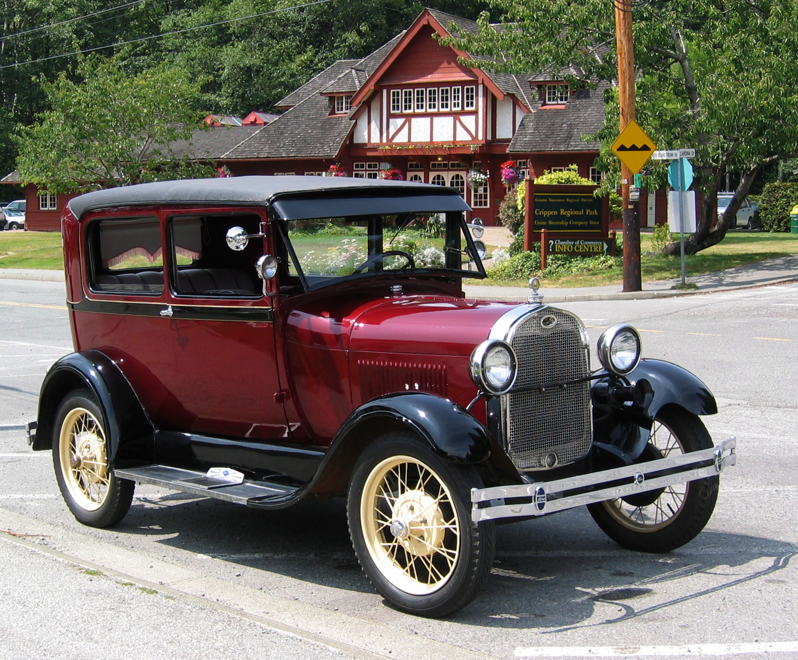
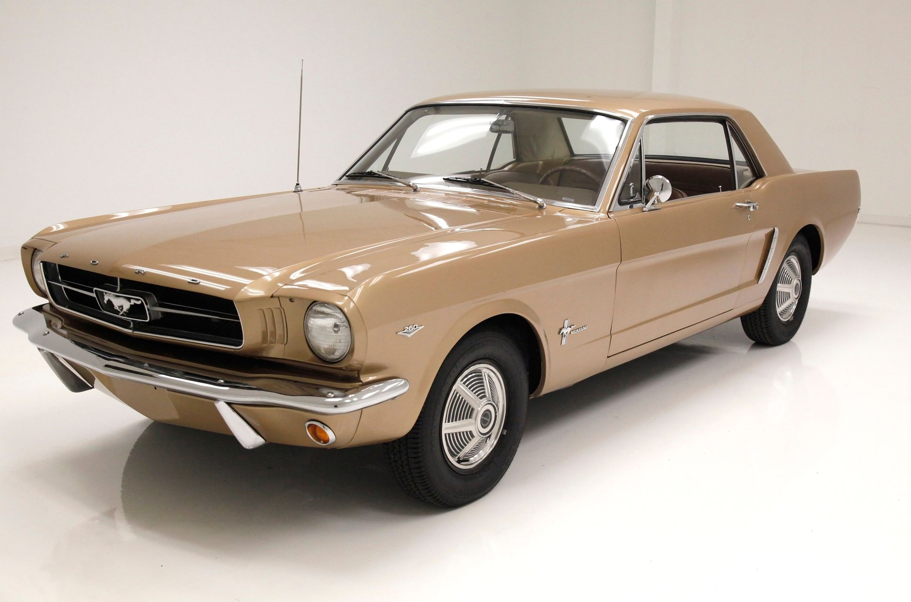
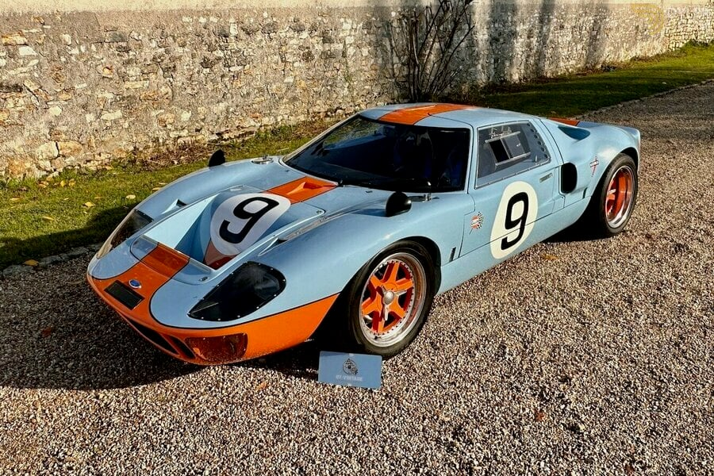
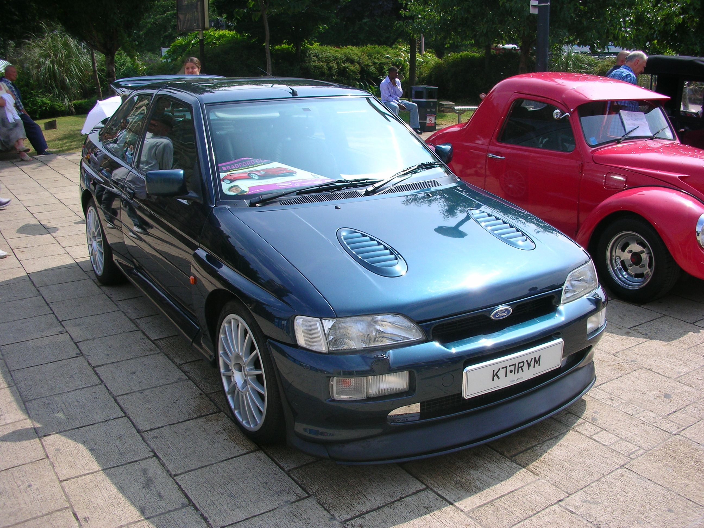

Modell: Ford Model A
Baujahr: 1927-1931
Produktionsstückzahl: 4.3 Millionen
Motor: 4-Zylinder, 3.3L
Leistung: 40 PS
Höchstgeschwindigkeit: 65 km/h

Modell: Ford Mustang
Baujahr: 1964-1973
Produktionsstückzahl: Über 1.5 Millionen
Motor: V8, 4.7L
Leistung: 271 PS
Höchstgeschwindigkeit: 210 km/h

Modell: Ford Thunderbird
Baujahr: 1955-1997
Produktionsstückzahl: Über 4 Millionen
Motor: V8, 5.1L
Leistung: 300 PS
Höchstgeschwindigkeit: 220 km/h

Modell: Ford GT40
Baujahr: 1964-1969
Produktionsstückzahl: 105
Motor: V8, 4.7L
Leistung: 485 PS
Höchstgeschwindigkeit: 335 km/h

Modell: Ford Escort RS Cosworth
Baujahr: 1992-1996
Produktionsstückzahl: 7,145
Motor: 2.0L Turbo
Leistung: 227 PS
Höchstgeschwindigkeit: 240 km/h